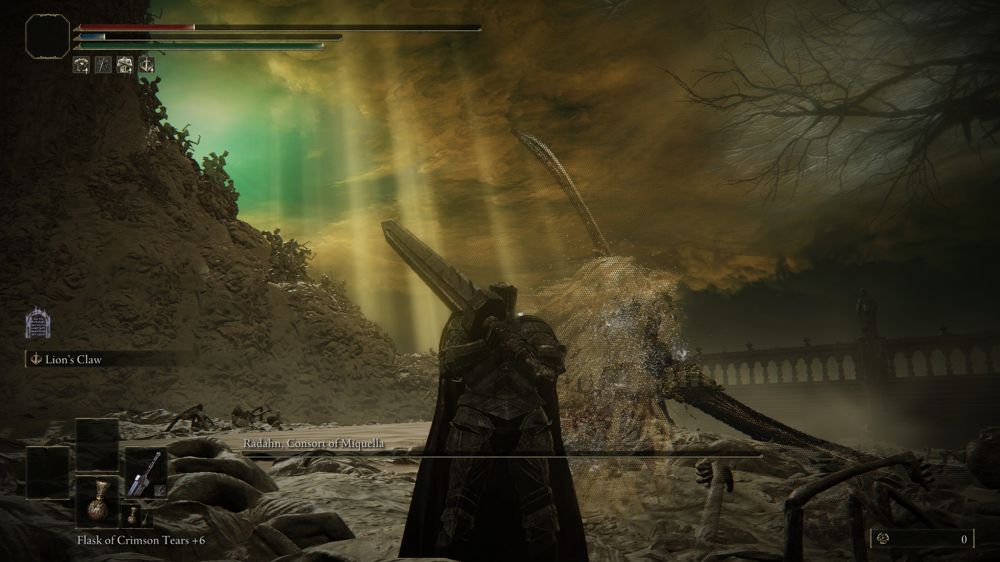
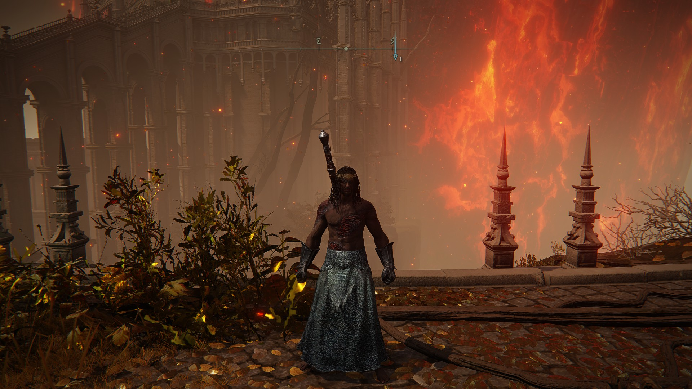
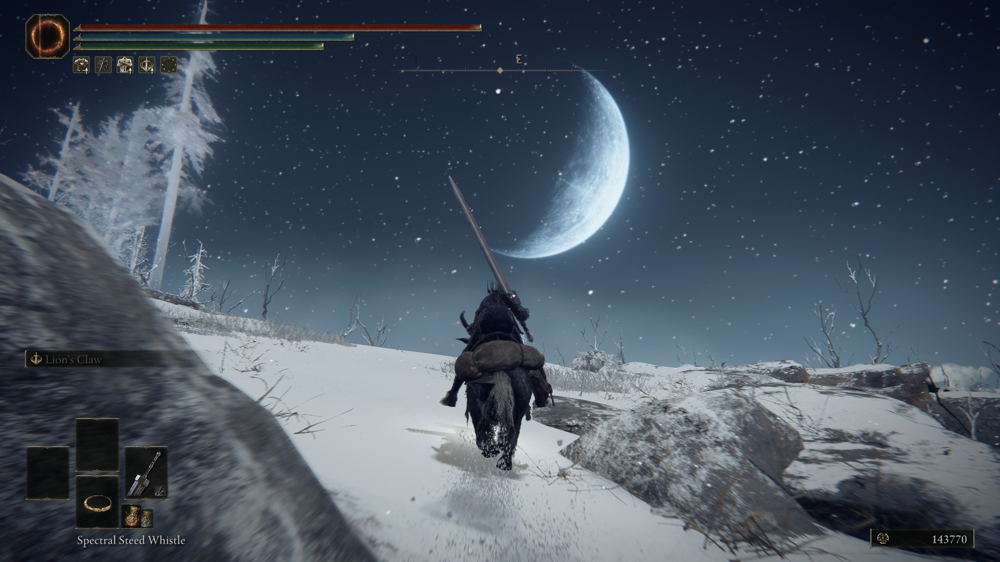

Zažite napínavé dobrodružstvá a podieľajte sa na osude ohromného sveta,
ktorý je plný intríg a temných síl. Vďaka charakteristickému spôsobu boja, budete musieť nájsť na každého protivníka tú správnu stratégiu.

Vydajte sa na cestu za Elden Ring-om, ktorý bol zničený a rozptýlený po celých Krajínach The Between.
Zažite napínavé dobrodružstvá a podieľajte sa na osude ohromného sveta, ktorý je plný intríg a temných síl. Vďaka charakteristickému spôsobu boja,
budete musieť nájsť na každého protivníka tú správnu stratégiu.Vstaň, poškvrnený a nechaj sa viesť milosťou, aby si ovládol moc Elden Ring-u a stal
sa Elden Lordom. V krajinách The Between, kde vládne kráľovná Marika bol Elden ring, zdroj Erdtree rozdrvený. Marikini potomkovia získali črepy Prstenca
, známe ako Veľké Runy a šialený pach ich novoobjavenej sily spustil vojnu: The Shattering. Zafarbení, ktorí boli zavhrnutí milosťou a vyhnaní z krajín
The Between, Vy mŕtvi, ktorí ešte žijete, Vaša milosť je už dlho stratená, nasledujte cestu hmlistým morom a postavte sa pred Elden Ring.

Keď sa ozveny konfliktu hrnú v diaľke, prichádza vyvrheľ. Jeho predkovia kedysi nazývali krajiny The Between domovom, ale požehnané svetlo
milosti sa ich kmeňu stratilo už dávno a boli vylúčení z kráľovstva. Sú poškvrnení a vrátili sa, aby získali Eldenské lordstvo, ktoré im prisľúbila
legenda. Toto je svet Elden Ring. Krajiny čakajú na Váš prieskum. Budete jazdiť po rozľahlých poliach, cválať po zvlnených kopcoch a skákať na vrchol
skalnatých útesov na svojom prchavom koni, čím odhalíte svet prekypujúci životom ale aj nebezpečenstvom. Na veľkolepých poliach, kde sa začína Vaše
cesta, bájne stvorenia pradú siete, v močiaroch číhajú nevýslovné hrôzy a na tých, ktorí sa potulujú nevedomky, čakajú všelijakí vojaci a potulní
bojovníci. Plaché tvory papajú na sladkých trávach alebo sa preháňajú v poraste.Tých pár obyvateľov, ktorí nie sú šialení ani nepriateľskí sa zdržuje
v blízkosti rozbitých zvyškov miest, ktoré po sebe zanechala udalosť zvaná The Shattering. Môžu mať pre Vás odpovede na rôzne otázky, ak im pomôžete.
Nad nimi, usadení v obrovských dedičstvách, plných pascí, tajomstiev a strážcov, vládnu polobohovia - pokrivení lordi, ktorí začínali ako členovia
kráľovskej a šľachtickej rodiny - s nepoddajnou mocou, ktorú im poskytujú úlomky Elden Ring.
Vrátiť sa na začiatok
